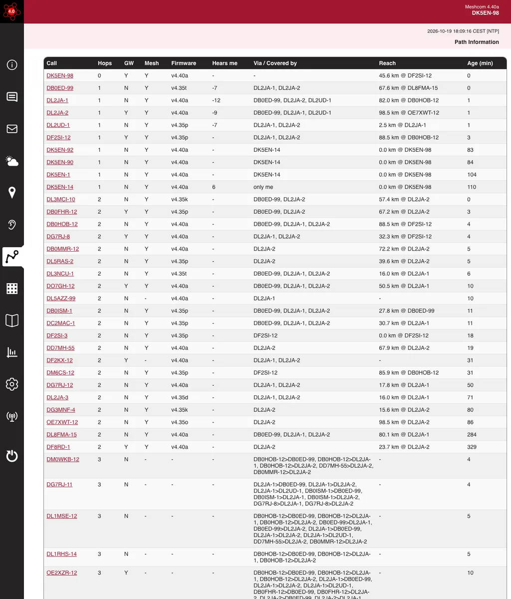
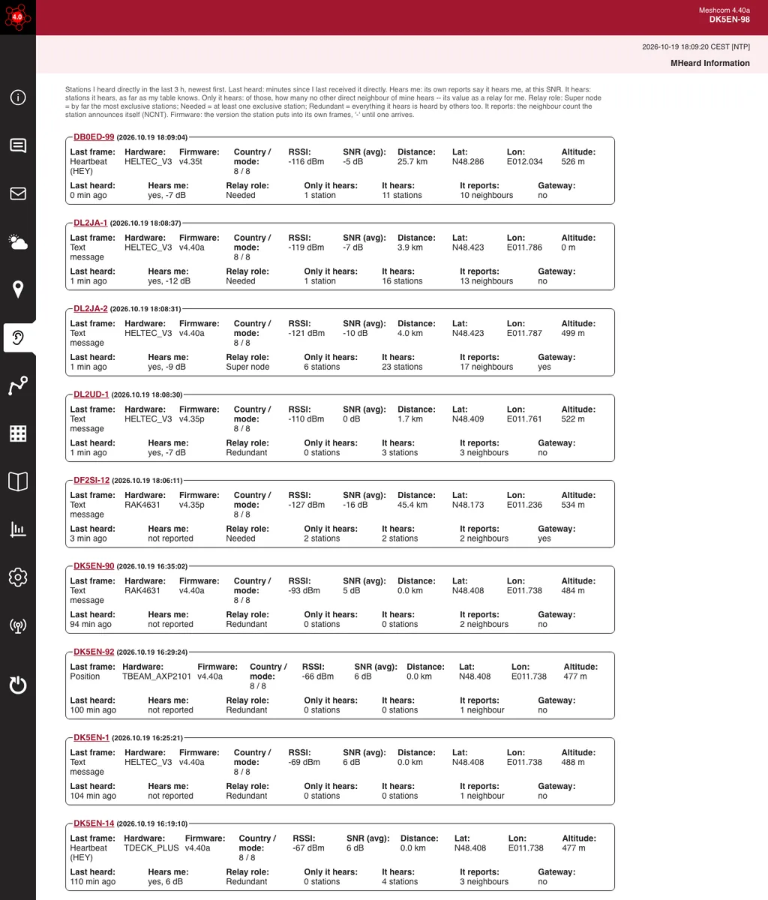
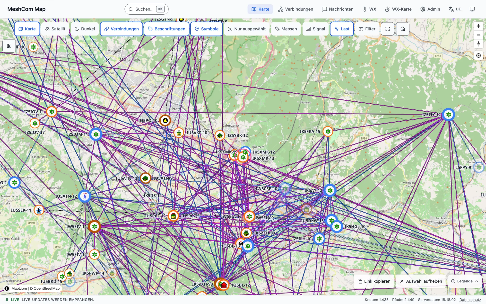
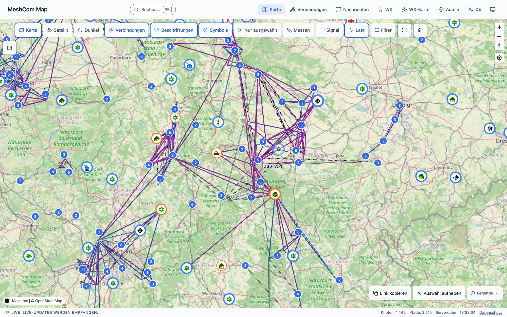
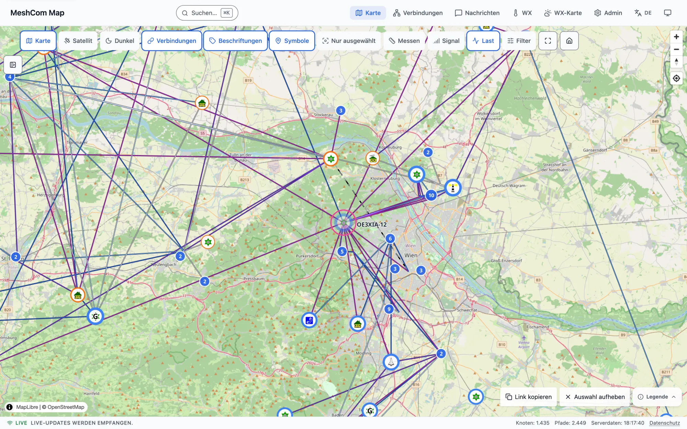

Kein Routing, und genau das ist richtig
- Stand: 25.10.2026, Aussagen geprüft gegen den Quellcode von fork-dev
- Firmware: Release v4.40a.10.24 dieses Forks; das offizielle Release 4.40a ist vom 02.10.2026
- Quellen: Quellcode, Repo-Dokumente, meshmap.oevsv.at (Netzdaten vom 19.10.2026, wo nicht anders vermerkt)
MeshCom flutet statt zu routen, und das ist auf einem geteilten LoRa-Kanal die richtige Wahl. Seit 4.40a streicht die Nachbarschaftsmatrix überflüssige Wiederholungen, und persönliche Nachrichten werden bis zur Quittung wiederholt.
Empfehlung: Mesh nur dort einschalten, wo ein Knoten Stationen versorgt, die sonst niemand erreicht.
Handlungsbedarf
- Relais-Betreiber:
--mesh off, wo andere Knoten das Gebiet versorgen. Jede Wiederholung kostet Sendezeit bei allen in Reichweite. - Knoten mit 4.35 im Gebiet: auf 4.40a oder neuer aktualisieren. Alte Firmware wiederholt weiter alles, was sie hört.
- Postfach gewünscht: Ein Store-Knoten (ESP32-S3 oder RAK4631 mit Dauerstrom) muss mit
--store own|list|heardselbst eingeschaltet werden. Standard ist aus.
Kernfakten
- Kein Routing: Im Quellcode gibt es keine Routing-Tabelle, keine Next-Hop-Auswahl und keine Metrik. Ein Relay fragt nur: bin ich gemeint, ist Mesh an, ist Hop-Budget übrig.
- Overhead: Status-Frames (HEY, Position, Telemetrie) überwiegen den Chat etwa 450 zu 1 (meshmap, 168 Stunden bis 19.10.2026).
- Stau: 66 % der Sendeversuche fanden den Kanal belegt (5 Knoten, 16 Stunden, 13. und 14.03.2026). Am 18.10.2026 ging eine Server-Nachricht bei DK5EN-98 im Schnitt 3,8-mal in die Luft.
- Weniger Wiederholungen: Die Nachbarschaftsmatrix entscheidet, ob ein Relay gebraucht wird.
--nbrrelay onist in den Release-Builds dieses Forks seit v4.40a.10.19 fest. Die Wirkung im Feld ist noch nicht nachgemessen. - Zustellung: Persönliche Nachrichten werden bis zu dreimal im Abstand von 40 Sekunden wiederholt, nur die Quittung des Empfängers stoppt das. Gruppe und Broadcast bleiben ohne Quittung.
- Sendepuffer: Seit v4.40a.10.23 ein Pool aus 20 Plätzen mit Verfall je Priorität, kein Ring mehr.
- Sicherheit: Die Fernsteuerung RM1 ist signiert. Normale Nachrichten sind es nicht, und Verschlüsselung ist im Amateurfunk verboten.
- EMCOMM: Reines LoRa genügt, der Backbone ist Brücke und nicht Träger. Offen sind Dringlichkeitsstufen (Precedence) und signierte Nachrichten.
Digitale Nachrichten über Funk sind 50 Jahre alt, MeshCom steht auf ihren Schultern
- Gemeinsame Linie: Von X.25 (1976) über AX.25 und APRS bis zu LoRa-Mesh. Der Zeitstrahl lässt sich mit Weiter, Zurück und Play durchlaufen.
- Nicht im leeren Raum: Die fünf Digimode-Punkte (WSJT, WSPR, WSJT-X, FT8, JS8Call) zeigen, dass Amateurfunk-Digimodes parallel zur LoRa-Ära weiterentwickelt wurden.
- Datierung nach Repository: Meshtastic seit 01.02.2020, MeshCore seit 19.01.2025, MeshCom als „MeshCom Client 4.0“ seit 25.02.2023. Die Daten stammen aus der Repository-Historie, weil im Netz teils andere Gründungsdaten kursieren.
X.25 (CCITT)
Erste international standardisierte Paketvermittlung.
Von APRS blieb das Datenformat, die Sicherungsschicht von AX.25 ließen wir zurück
- Geerbt von APRS: Positionsmeldungen (DDMM.MM), Telemetrie (
T#mit PARM, UNIT, EQNS) und die Anbindung an aprs.fi über das Gateway. - Neuer Umschlag: Das APRS-Datenformat reist heute in einem eigenen binären LoRa-Frame, nicht mehr in AX.25-HDLC.
- Neuer Schwerpunkt: Gruppenchat und persönliche Nachrichten über Handy und Laptop, offline über LoRa.
| Stufe | Technik | Sicherung | Weg |
|---|---|---|---|
| AX.25 | Verbindungsorientiert: I-Frames mit Sendefolgenummern N(S) und N(R), Quittung per RR, Wiederholung per REJ und T1-Timer | Transportsicherung | Verbindung |
| Packet Radio | Digipeater mit Wegliste, die Zwischenstationen trägt der Operator von Hand ein | Pfad bekannt | Von Hand bestimmt |
| APRS | Nur UI-Frames als unbestätigter Rundruf, Hop-Budget wie WIDE2-2 | entfällt | Hop-Budget |
| LoRa-APRS | Ein Hop zum iGate, das ins Internet einspeist | entfällt | Stern statt Netz |
| MeshCom | Jeder Knoten wiederholt, ein Hop-Budget begrenzt die Flut, das Gateway ist optional | nur für PN, seit 4.40a | Flutnetz |
Was MeshCom übernommen hat
- Den Rundruf als Grundmodus: Jede Nachricht geht an alle in Reichweite.
- Das Hop-Budget (
max_hopstattWIDE2-2) als Grenze der Ausbreitung. - Die mitwachsende Pfadliste: Jeder Relay hängt sein Rufzeichen an.
- Das Gateway ins Internet, aus dem iGate-Gedanken.
Was auf dem Weg verloren ging
- Sendefolgenummern und ein Fenster, also die Erkennung, dass etwas fehlt.
- Eine Quittung, auf die sich der Sender verlassen kann (für PN seit 4.40a zurück).
- Ein Retransmit, den die Schicht selbst verantwortet (für PN seit 4.40a zurück).
- Jedes Wissen über den Weg, den bei APRS wenigstens noch ein Mensch bestimmte.
Der rote Faden dieses Vortrags: Die Transportsicherung, die bei persönlichen Nachrichten fehlte, gab es in AX.25 seit 1984. Sie wurde auf dem Weg über APRS bewusst weggelassen, weil Baken keine brauchen. Persönliche Nachrichten sind aber keine Baken.
1200-Baud-FSK passt in 3,4 kHz, LoRa spreizt dasselbe Bit über 250 kHz
- Preis: LoRa SF11 mit 250 kHz belegt etwa das 73-fache der Bandbreite von 1200-Baud-FSK und liefert nominal rund 0,9 kbit/s.
- Gewinn: Der Prozessgewinn der Spreizung lässt LoRa noch unter dem Rauschen dekodieren. Die Empfindlichkeitswerte in der Abbildung sind Datenblatt-Richtwerte und nicht im Code prüfbar.
- Folge: Ein einzelner Frame belegt den Kanal lange (0,85 bis 2,7 Sekunden), siehe nächste Folie.
Ein Kanal im ISM-Band, geteilt mit allem, was dort funkt
- Eine Einstellung für alle: Region EU (433,175 MHz, SF11, 250 kHz, Coding Rate 4/6, Präambel 32) ist die Werkseinstellung und der Normalfall im DACH-Raum.
- Weitere Regionen: Die Firmware kennt 17 Regionen-Presets. EU8 ist die Variante mit Präambel 8 und muss gewählt werden. Großbritannien läuft auf 439,9125 MHz mit SF10 und 125 kHz.
- Jede Wiederholung kostet Kanalzeit: Eine Nachricht mit
max_hop=4(Vorgabe, per--maxhopzwischen 1 und 6 wählbar) belegt den Kanal einmal je weiterleitendem Nachbarn und Hop. - Kein Duty-Cycle in der Firmware: Sie erzwingt keinen. Den Hinweis auf die 1-Prozent-Grenze der ETSI gibt es nur als Kommentar im Code.
Region EU, die Werkseinstellung
Beleg: src/country_profile.cpp (Standardzeile EU, Präambel LORA_PREAMBLE_LENGTH), src/configuration_global.h (DEFAULT_PREAMPLE_LENGTH 32), src/configuration_default.h (RF_FREQUENCY)
Zeit auf dem Kanal
Beleg: Airtime nach Semtech-Formel gerechnet. Wartezeit: Basis 3000, 4500 oder 5500 ms plus bis 350 ms Zufall (src/configuration_global.h), ab dem 4. Versuch 100 ms. TX-Watchdog TX_WATCHDOG_MS.
Hardware: Das Release enthält 30 Boards (27 ESP32, 3 nRF52). Verbreitet sind Heltec V3, TTGO T-Beam, T-Deck und T-Deck Plus, T-Beam Supreme und WisBlock RAK4631. Die Board-Klasse bestimmt, wie viele Nachbarn die Matrix hält (128 oder 64 Zeilen) und wie viele Duplikate sich ein Knoten merkt (60 bis 100 Einträge).
Rechtsrahmen: ISM/SRD gegen Amateurfunk, mit Wortlaut von § 16 Abs. 8 AFuV
- SRD-Teilband 869,40 bis 869,65 MHz: In Deutschland per BNetzA-Allgemeinzuteilung mit 500 mW ERP und 10 % Duty-Cycle freigegeben, großzügiger als die meisten anderen 868-MHz-Kanäle.
- Amateurfunk ist ein anderer Rahmen: Wer mit Amateurfunk-Rufzeichen sendet, unterliegt der Amateurfunkverordnung, unter anderem dem Verschlüsselungsverbot aus § 16 Abs. 8. Für ISM/SRD-Betrieb gilt es nicht.
- Kein 33-cm-Band in Region 1: Das 33-cm-Band (902 bis 928 MHz) gibt es nur in ITU-Region 2. In Europa, Afrika, dem Nahen Osten und Nordasien existiert dort keine Amateurfunk-Zuteilung.
„(8) Übertragungsverfahren müssen mit allgemein verfügbarer Technik oder mit entsprechenden Kenntnissen und Fertigkeiten eine Wiederherstellung übertragener Inhalte zulassen. Der Amateurfunkverkehr darf nicht zur Verschleierung des Inhalts kodiert oder verschlüsselt werden; ausgenommen sind Steuersignale für Erd- und Weltraumfunkstellen des Amateurfunkdienstes über Satelliten, ferner Steuersignale (einschließlich Remote-Betrieb) oder von anderen fernbedienten oder automatisch arbeitenden Stationen.“
Quellen: BNetzA-Allgemeinzuteilung SRD860 (869,40 bis 869,65 MHz, 500 mW ERP, 10 % Duty-Cycle), nicht gegen das Original geprüft. AFuV § 16 Abs. 8, gesetze-im-internet.de/afuv_2005/__16.html, Fassung der letzten Änderung vom 23.06.2021 (BGBl. I S. 1858).
Presets, Airtime-Rechnung und Code-Stellen
- 17 Presets: EU, UK, ON, EA, LA, 868, 915, MAN, EU8, UK8, US, VR2, 435, 436, 442, PL, none (
strCountryinsrc/lora_setchip.cpp). Die Parameter je Preset stehen inkCountryRfProfilesinsrc/country_profile.cpp. - Airtime: Nach der Semtech-Formel mit SF11, 250 kHz, CR 4/6, Präambel 32, expliziter Header, CRC an, LDRO aus: 50 Byte ergeben 0,854 s, 80 Byte 1,10 s, 100 Byte 1,30 s, 255 Byte 2,67 s. Mit Präambel 8 (EU8) sind es 0,657 s, 0,903 s, 1,10 s und 2,48 s. Nominale Bitrate 895 bit/s.
- Airtime in der Firmware:
lora_time_on_air_ms()insrc/lora_functions.cpprechnet sie nur für die altersabhängige Haltezeit. Gezählt oder begrenzt wird die Sendezeit nicht.
MeshCom routet nicht, es flutet und lässt die Statistik gewinnen
- Keine Routing-Tabelle, kein Next-Hop, keine Metrik: Das gilt für den gesamten Quellcode. Ein Relay prüft das Zielrufzeichen nur auf die Frage „Bin ich selbst gemeint?“. Wenn ja, wird der Frame angezeigt, wenn nein, wird er wiederholt.
- Gestoppt wird nur durch Regeln: Mesh aus, Hop-Budget aufgebraucht, Schleife, Duplikat, Sendepuffer voll. Welche Regeln das heute sind, steht unten für Entwickler.
- Ping ist keine Wegprüfung:
{ping}und{pong}werden vom Fluten ausgenommen und funktionieren nur zwischen direkten Funknachbarn. Ein erfolgreicher Ping sagt „wir hören uns direkt“, nichts über einen Weg.
Die Gründe, aus denen ein Relay einen Frame nicht wiederholt (Stand fork-dev 25.10.2026)
| Grund (RLY q=) | Bedingung | Stelle in src/lora_functions.cpp |
|---|---|---|
hop0 | Hop-Budget aufgebraucht, das Dekrement kommt vor dem Einreihen | 2654, Dekrement 2496 |
loop | Das eigene Rufzeichen steht schon im Quellpfad | 2509 |
| Dedup | Die msg_id liegt im Duplikatspeicher (MAX_DEDUP_RING 60 bis 100 je Board-Klasse) | vor dem Relay-Entscheid |
self | An mich selbst adressiert (strcmp auf das Rufzeichen) | 2462 |
nomesh | Mesh abgeschaltet (checkMesh(), src/via_functions.cpp) | 2474 |
gwfilter, gwcap | Nur Gateways: Ziel WLNK-1, APRS2SOTA oder 100001; Pfad länger als das Hop-Limit | 2382, 2387, 2393 |
ping | Ping an 100001 | 2405 |
aprs | Der Frame kam über den LoRa-APRS-Kanal | 2468 |
full, cet | Sendepuffer voll und Priorität zu niedrig; veralteter {CET}-Zeitframe | 2643 |
- Zeilennummern: Sie gelten für fork-dev am 25.10.2026 (07d3ed69) und wandern mit jedem Commit. Dauerhaft sind die Namen der Gründe, sie stehen als
RLY ... q=im Setlog (docs/how-to-read-meshcom-logs.md). - Was sich gegenüber dem Stand 23.08.2026 geändert hat: Die Entscheidung ist kein Dreizeiler mehr, sondern die Kette
rly_gomit benannten Gründen. Der Ring ist ein Pool (src/txring_functions.cpp). Seit der Matrix sitzt zusätzlichnbrRelayNeed()vor dem Einreihen. - Inaktiver Sonderfall:
src/via_functions.cppenthält ein statisches VIA-Gate im Stil klassischer Digipeater. Es ist per Standard aus (bVIA = false), muss von Hand konfiguriert werden und lernt nichts.
Der Pfad kommt jetzt aus der Nachbarschaftsmatrix, und die Weiterleitung fragt sie

- Hörbeweis statt Protokoll: Jeder gehörte Frame trägt im Pfad einen Beweis, wer ihn wiederholt hat, hat den Vorgänger gehört. Daraus entsteht über 12 Stunden eine Kreuztabelle „wer hört wen“.
- Die Matrix entscheidet über das Relay: Vor dem Wiederholen fragt der Knoten, welche seiner Nachbarn den Frame brauchen. Hört er eine Kopie, die alle diese Nachbarn schon versorgt, streicht er die eigene Wiederholung. Ist er für einen Nachbarn der einzige Versorger, sendet er immer.
- Der Schalter ist zu:
--nbrrelay onist in den Release-Builds dieses Forks seit v4.40a.10.19 fest. In Bench-Builds gibt es zusätzlichcount(nur rechnen und zählen) undoff. - Trotzdem kein Routing: Die Matrix weiß, wer in den letzten Stunden wen gehört hat, nicht ob der Weg morgen noch da ist. Sie entscheidet, ob eine Wiederholung gebraucht wird, nicht wohin ein Paket geht.
Was die Spalten der Path-Seite bedeuten
| Hops | 0 der eigene Knoten, 1 direkt gehört, 2 und mehr über die Matrix erschlossen |
| Hears me | Der Nachbar meldet in seinen eigenen Berichten, dass er mich hört, mit diesem SNR |
| Via / Covered by | Bei Hop 1: wer diesen Nachbarn sonst noch versorgt. Ab Hop 2: über wen der Weg läuft |
| Reach | Größte Entfernung zu einem frisch gehörten Partner |
Code-Stellen und was sich seit 4.35 geändert hat
- Seite:
sub_page_path()insrc/web_functions/web_functions.cpp, Matrix übernbrDirectMask()undnbrRouteGet(). - Entscheidung:
nbrRelayNeed()insrc/lora_functions.cppvor dem Einreihen des Relays; Fall A (ich bin einziger Versorger) sendet mit 3,5 s Basis und Jitter 0 bis 2 Slots, Fall B (alles Erreichbare hat ein anderer) wartet nachrangig. KonstantenNBR_RELAY_CASE_*insrc/configuration_global.h. - Bis 4.35 stand auf der Path-Seite das Protokoll einer einzelnen HEY-Reise, und keine Zeile der Sende- oder Weiterleitungslogik las es.
- Sperre:
prodLockRefuses()insrc/prod_lock.hlehnt--nbrrelay offmit[ERR];locked;nbrrelayab. Hintergrund: docs/production-locked-settings.md.
Drei Wege, eine Nachricht loszuschicken, mit drei verschiedenen Zusagen
| Weg | Ziel | Priorität | Quittung | Wer zeigt es an |
|---|---|---|---|---|
| Broadcast | * (Vorgabe, wenn kein Ziel angegeben ist) | 2 (HIGH) | keine | Jeder Knoten in Reichweite |
| Gruppe | Nummer 1 bis 99999, zum Beispiel 262 | 2 (HIGH) | keine | Nur Knoten, die die Gruppe abonniert haben (bis zu 6, --setgrc) oder keine Gruppe eingetragen haben |
| Persönlich (DM) | Rufzeichen, zum Beispiel OE1ABC-12 | 1 (CRITICAL) | Wiederholung bis zur Quittung | Nur das Ziel, Vergleich exakt inklusive SSID |
- Weitergeleitet wird jede Gruppe: Das Abo ist ein Anzeigefilter, keine Netzfunktion. Der Relay-Entscheid kennt das Abo nicht.
- Exakter Vergleich: Groß- und Kleinschreibung zählen.
DK5ENerreichtDK5EN-98nicht. Nur die DM bekommt eine Quittungsanforderung. - Grenzen beim Tippen: Der Text darf höchstens 160 Zeichen lang sein. Ein Ziel in geschweiften Klammern darf höchstens 9 Zeichen haben, sonst greift die Klammer-Erkennung nicht und die Nachricht geht versehentlich als Broadcast hinaus.
Häufiges Missverständnis: „262“ ist kein Broadcast, sondern eine Gruppe. Der echte Broadcast ist das Zeichen *. Wer an 262 sendet, erreicht alle Knoten in Funkreichweite, angezeigt wird es aber nur bei denen, die 262 abonniert haben oder gar keine Gruppe eingetragen haben.
Code-Stellen für Ziel, Priorität und Gruppenprüfung
- Ziel und Länge:
sendMessage()insrc/loop_functions.cpp. Vorgabeziel"*", Textlänge 1 bis 160, Klammerziel nur, wenn}vor Stelle 11 steht. - Gruppe:
CheckGroup()undCheckOwnGroup()insrc/aprs_functions.cpp; Abo-Feldnode_gcb[6]insrc/meshcom_settings.h. - Priorität und Wartezeit: Prioritäten
MSG_PRIO_*undCSMA_PRIO_BASE_*insrc/configuration_global.h. Für beide Wege 3000 ms Basis.
Mesh nur, wo es ein Gebiet versorgt; das Gateway ist optional, der Normalfall funkt ohne Internet
Gateway: die Brücke ins Internet
- Hoch: Gehörte Pakete gehen per UDP an den MeshCom-Server (Port 1990).
- Runter: Pakete vom Server werden auf LoRa zurückgelegt, mit gesetztem Server-Bit, damit kein zweites Gateway dasselbe Paket erneut einspeist.
Mesh: die Verlängerung per Funk
- Betrifft nur das Weiterleiten: Empfangen, Anzeigen und eigenes Senden laufen weiter. Mesh aus macht aus dem Knoten einen Endpunkt, keinen tauben Knoten.
- Kostet Sendezeit bei allen in Reichweite: Mesh lohnt sich nur, wo der Knoten Stationen erreicht, die sonst niemand versorgt.
| Gateway | Mesh | Was der Knoten tut | Typische Rolle |
|---|---|---|---|
| AN | AN | Volle Brücke Funk und Internet und Funk-Relay | Standort-Knoten auf dem Berg |
| AN | AUS | Speist ein und aus, verlängert die Funkstrecke aber nicht | iGate im dichten Stadtgebiet |
| AUS | AN | Reines Funk-Relay ohne Internet, Werkszustand | Exponierter Standort, der ein Gebiet versorgt |
| AUS | AUS | Empfängt und sendet nur für sich selbst | Insel, Handgerät, Testaufbau |
Mesh muss in großen Gebieten geplant sein. Wiederholen viele Knoten dasselbe Paket, wird jeder Frame schnell mehr als zehnmal ausgesendet, das Netz wird langsam und kann zum Erliegen kommen.
- Messung am 18.10.2026, vor den Korrekturen: Bei DK5EN-98 ging jede Server-Nachricht im Schnitt 3,8-mal in die Luft (bis 6), jede eigene 6,4-mal (bis 9).
- Das Relais DB0TAW-14 in der Rhön hatte 16 bis 19 von 20 Sendeplätzen belegt, 41 bis 43 % Empfangslast und kaum noch Sendezeit.
- Seither:
--nbrrelay onfest und eine Haltezeit, die mit dem Alter eines Frames kürzer wird. Auf der Bench geprüft ist das nicht, eine Auswertung der Feldaufzeichnung steht aus.
Woher ein Gateway weiß, dass es Internet hat
- Grundlage: WLAN-Status, gültige IP und eine Fehlerzählung beim UDP-Senden.
- Heartbeat: Der Server antwortet mit
BEAT-Frames. Der Knoten überwacht sie mit einer Warnstufe und einem Timeout von 65 Sekunden (MAX_HB_RX_TIME). Ist das WLAN weg, setzt er die UDP-Verbindung zurück (src/esp32/gateway_service_esp32.cpp). - Lücke: Ist das WLAN da, der Server aber stumm, loggt der Knoten „server unresponsive, waiting“ und bleibt Gateway. Sichtbar ist das nur in
--infound auf der Web-Info-Seite als „no response for N s“ (src/gw_link_status.cpp). - Mesh-Schalter: Bit 0x0020 in
node_sset2, gelöscht heißt an (bMESHinsrc/esp32/esp32_main.cppundsrc/nrf52/nrf52_main.cpp). Gateway: Bit 0x1000 innode_sset. - Messquelle:
docs/lora-qrt-dk5en98-db0taw14-20261018.md.
Heute überwiegt der Status-Verkehr, aber es wird mehr geschrieben
- 450 zu 1: Status-Frames (HEY, Position, Telemetrie, zusammen 10.910 je Stunde) stehen gegen 24 Chat-Nachrichten je Stunde. Im August waren es etwa 920 zu 1.
- Der Chat wächst: 2,4-mal so viele Nachrichten je Stunde wie am 24.08.2026 (damals 10 je Stunde). In 30 Tagen waren es 28.818 Nachrichten, 961 pro Tag von 1.252 Absendern.
- Die Luft ist schon ohne Chat eng: 66 % der Sendeversuche fanden den Kanal belegt (BergLog, 5 Knoten, 16 Stunden). Bei dem 100-fachen Chat-Aufkommen wird Chat spürbar, beim 500-fachen übersteigt er den Status-Verkehr.
vs. Nutzlast/Chat (MSG = 24/h; im August ~920 : 1)
Wenn MSG-Traffic weiter wächst: bei ×100 (2.400/h) wird Chat spürbar; bei ×500 (12.000/h) übersteigt Chat den Status-Verkehr.
Beleg: meshmap.oevsv.at, Aktivitätsreihe (168 Stunden bis 19.10.2026 17:00, rund 1.635 aktive Stationen) und Nachrichtenstatistik 30 Tage; August-Vergleich aus dem Dashboard-Aggregat vom 24.08.2026. BergLog: Felddaten vom 13. und 14.03.2026, 856.000 Logzeilen.
Trickle bremst die Baken: 53 % weniger eigene HEY in der Feldmessung

- Die Bake ist winzig: Die Nutzlast einer HEY ist nur die eigene Nachbarzahl, zum Beispiel
R21;. Position, Hardware und Status reisen im generischen Rahmen mit. - Jeder Hop hängt einen Messwert an: Aus
R21;wirdR21;9,71,-7;, je Hop ein Schnappschuss aus Nachbarzahl, RSSI und SNR. - Trickle ist aktiv: Die HEY-Rate startet nach RFC 6206 bei 30 Sekunden, verdoppelt sich bis 15 Minuten und wird unterdrückt, sobald der Knoten 2 konsistente Nachbar-Baken gehört hat.
- Einsparung: 53 % bei den eigenen HEY (29 bis 75 % je Knoten), im eingeschwungenen Zustand über 90 %. Fremde HEY, die ein Knoten weiterreicht, spart Trickle nicht.
Die Nachbarzahl zählt seit 4.40a nur noch, wer mich auch hört. Gezählt wird ein Nachbar, den ich in der letzten Stunde direkt gehört habe und der mich laut eigener Meldung hört oder stabil über der SNR-Schwelle liegt.
Auf der Luft ist der Wert höchstens 99. Die Matrix hält 128 Nachbarn auf allen ESP32-S3 (auch T-Deck und T-Deck Plus) und auf dem RAK4631, 64 auf dem klassischen ESP32 und auf E22_XML.
Messung, Konstanten und Code-Stellen
- Feldmessung: 18.03.2026, 5 Knoten mit Firmware v4.35p, 9,5 Stunden (
docs/hey-supp.md). Den größten Teil der HEY-Sendungen eines Knotens machen fremde HEY aus (776 bis 1390 je Knoten), die Trickle nicht erfasst. - Konstanten:
TRICKLE_IMIN_S30,TRICKLE_IMAX_S900,TRICKLE_K2 insrc/configuration_global.h. - Anhängen des Messwerts:
appendHeySignalReport()insrc/aprs_functions.cpp. - Nachbarzahl:
nbrNcnt()undnbrNcntAir()insrc/nbr_views.h,NBR_NCNT_AIR_MAX99 insrc/nbr_matrix.h,NBR_MAX_ROWSinsrc/configuration_global.h.
Kleben viele Knoten aufeinander, wird die Luft dicht
- Dichte Gebiete leiden zuerst: Wo fast jeder fast jeden hört, wiederholen viele dasselbe Paket. Florenz und Prato sind das Beispiel, 53 Knoten, 22 davon Gateways (23.08.2026).
- Der Stau selbst: 66 % der Sendeversuche fanden den Kanal belegt, bis zu 27 CAD-Wiederholungen für ein Paket (CAD ist die Kanalabfrage vor dem Senden).
- Vorrang-Knoten in der Simulation: Wer netzbildend ist, relayt zuerst und geordnet, die anderen halten still. In der Firmware leistet Ähnliches die Matrix (siehe Folie „Der Pfad kommt jetzt aus der Nachbarschaftsmatrix“).

Zur Rechnung in der Simulation: Ein Frame von 255 Byte dauert bei Präambel 32 etwa 2,7 Sekunden. Zehn Knoten mit vier Hops ergeben als Obergrenze rund 107 Sekunden Kanalzeit für einen einzigen Frame. Das ist eine Rechnung, keine Messung.
Ob ein Knoten sendet, entscheidet die Matrix; wann, entscheiden Priorität und Zufall
| Prio | Was | Basis | Verfall im Puffer |
|---|---|---|---|
| 1 | ACK und persönliche Nachricht | 3000 ms | ACK 90 s, DM keiner |
| 2 | Gruppe und Broadcast | 3000 ms | keiner |
| 3 | Mesh-Relay (fremde Pakete) | 4500 ms | 300 s |
| 4 | Position | 5500 ms | 120 s |
| 5 | HEY-Bake | 5500 ms | 180 s |
Beleg: CSMA_PRIO_BASE_1 bis 5, RING_TTL_*_MS, RING_BG_MAX_AGE_MS in src/configuration_global.h. Dazu je 0 bis 10 Zufalls-Slots à 35 ms.
- Wartezeit: Basis plus Zufall (0 bis 10 Slots à 35 ms). Ab dem 2. Versuch Basis × 5/6, ab dem 3. × 2/3, ab dem 4. nur noch 100 ms ohne Zufall, bis der Kanal frei ist. Unter Last wird der Backoff aggressiver, nicht defensiver.
- Matrix vor Zufall: Ist ein Relay für einen Nachbarn der einzige Versorger, sendet es früh (3,5 s Basis, Jitter 0 bis 2 Slots). Sind seine Nachbarn schon versorgt, wartet es nachrangig, bei Position und HEY einmalig 20 Sekunden, und bricht ab, wenn es eine ausreichende Kopie hört.
- Alters-Boden: Wartet ein Frame der Prioritäten 1 bis 3 länger als 20 Sekunden, schrumpft die Haltezeit nach einem Fremdframe auf 0,5 bis 1,5 Sekunden, nach 60 Sekunden auf 100 ms.
Der Sendepuffer ist ein Pool
- 20 Plätze, jeder frei nutzbar (seit v4.40a.10.23). Es gibt keinen toten Platz hinter einem wartenden Eintrag mehr.
- Auswahl: höchste Priorität zuerst, bei Gleichstand der älteste Eintrag.
- Voll: Es weicht der älteste Eintrag der niedrigsten Priorität. Ist die neue Nachricht selbst die unwichtigste, fliegt sie raus.
- Gleiches ersetzt Gleiches: Eine neue HEY oder Position desselben Absenders ersetzt die wartende.
- Rückstau: Ab 16 von 20 Plätzen lehnt der Knoten neue eigene Texte ab (
QRT NOT SENT) und gibt wieder frei, sobald weniger als 16 belegt sind.
Beleg: docs/campaign-tx-pool.md, docs/backpressure-protocol.md
Der Kanal ist meistens belegt, und dann wird der Takt schneller
Vor jedem Senden prüft CAD den Kanal, bei Belegung ein zweites Mal gegen Fehlalarme. Ist der Kanal belegt, wartet der Knoten nicht länger, sondern kürzer.
Das ist der CAD-Sturm: Wird der Kanal frei, feuern alle wartenden Knoten im selben 100-ms-Fenster ineinander, innerhalb der 28-ms-Blindzone des CAD.
aller Sendeversuche fanden den Kanal belegt (5 Knoten, 16 Stunden, BergLog 13. und 14.03.2026).
Noch nicht entschieden: Die Verfallszeiten je Priorität sind vorläufig. Die Nachtmessung auf DK5EN-98 und die Entscheidung über die endgültigen Werte stehen aus (docs/campaign-tx-pool.md).
Wo das im Code steht
- Backoff-Arithmetik:
csmaTimeoutPrio()insrc/csma_timing.h, Zufallsziehung incsma_compute_timeout_prio()(src/lora_functions.cpp). Die Versuchszahl ist nicht begrenzt (MAX_CAD_WAITist definiert, wird aber nicht gelesen); abCSMA_MAX_ATTEMPTS3 giltCSMA_RAPID_RX_MS. - Zweiter CAD-Scan: Bei belegtem Kanal ruft das TX-Gate in
src/esp32/esp32_main.cpp(um Zeile 3915 bis 3940)radio.scanChannel()ein zweites Mal auf; erst die bestätigte Belegung zählt als Versuch. Die 28 ms stehen als CAD-Anteil der SlotgrößeCSMA_SLOT_SIZEinsrc/configuration_global.h. - Alters-Boden:
csmaApplyAgeFloor()undCSMA_AGE_*(20.000 und 60.000 ms), nur für Prioritäten 1 bis 3, nie nach eigenem TX. - Fall A und B:
txringCaseBackoffSlot()insrc/txring_functions.cpp, KonstantenNBR_RELAY_CASE_*. - Pool:
getNextTxSlot(),txRingBeginTx(),txRingFinishTx()insrc/txring_functions.cpp, VerfalltxRingTtlMs()insrc/txring_ttl.h. Während einer Sendung hat ein Platz den Status INFLIGHT und wird nie verdrängt. - Text bleibt unberührt: Ein Text-Relay im Fall B behält die normale Basis (4500 ms) und die normalen Slots, weil Menschen auf Text warten.
Nicht jeder Knoten ist gleich: wichtig ist, wie allein seine Nachbarn ohne ihn wären
Ameisen wählen keinen Weg, sie riechen ihn. Lokale Regeln, globale Ordnung: für ein Flutnetz die richtige Denkweise.
Die Idee: Netzwichtigkeit
Netzwichtigkeit = Σ 1 / NCNachbar i
- Nachbar meldet 1: Er hängt zu 100 % an mir, Beitrag 1,0.
- Nachbar meldet 20: Er hat reichlich Alternativen, Beitrag 0,05.
- Von 1 auf 2 halbiert sich der Beitrag, von 10 auf 11 ändert sich fast nichts.
Beleg: docs/adr-nc-importance-backoff.md, ADR 02, Rev. 3. Die Nachbarzahl NC liegt seit v4.35n in jeder HEY-Bake.
Was daraus geworden ist
- Der Entwurf ist nicht umgesetzt: Der ADR steht auf „Draft“, die Entscheidung folgt nach der Feldauswertung der Matrix.
- Gebaut wurde etwas Ähnliches: Statt Wichtigkeits-Slots fragt jeder Knoten die Matrix, ob ein Nachbar ihn braucht (Folie „Der Pfad kommt jetzt aus der Nachbarschaftsmatrix“).
- Was noch fehlt: eine Häufigkeit je Nachbar im Knoten, auf die die Sendelogik zugreift. Die Rohdaten liefert
--setlog on, die Verdichtung im Knoten gibt es nicht.
Zweimal ehrlich bleiben:
- Das Ameisenbild ist unsere Erzählebene. Im ADR 02 kommen weder „Ameise“ noch „Pheromon“ vor, dort steht eine Abhängigkeitsformel und keine Verstärkung erfolgreicher Pfade.
- Die Last-Zahlen der MeshMap sind beobachtete HEY-Meldungen, höchstens eine je gesendetem Frame netzweit. Sie sind verzerrt durch das Wettrennen der Gateways ans Internet und durch Trickle. Das ist keine Kanalauslastung und keine Airtime: Ein niedriger Wert kann ein ruhiges Segment heißen oder nur, dass ein anderes Gateway schneller war.
Was --setlog on liefert und was im Knoten nicht vorhanden ist
- Rohdaten: Zu jedem Empfang der vollständige Pfad, RSSI, SNR und das Dedup-Ergebnis, zu jedem Frame die Relay-Entscheidung mit Grund, zu jeder eigenen Sendung Wartezeit, Warteschlangentiefe und CAD-Versuche, alle fünf Minuten eine Statuszeile mit Kanalauslastung. Zeilenarten in
src/setlog_lines.h. - Nicht im Knoten: Die MHeard-Tabelle bleibt ein Schnappschuss, jeder neue Empfang überschreibt den alten. Die Zähler im Knoten sind global je Prioritätsklasse (STAT-Zeile), nicht je Nachbar.
Stadt, Berg, Stern: Wichtigkeit ist nicht Nachbarzahl
Ein Stadtknoten und ein Bergknoten können beide 10 Nachbarn haben. Der eine kommt auf Wichtigkeit 1,0, der andere auf 7,2. Den Unterschied macht nicht, wie viele mich hören, sondern wie allein die wären, die mich hören.
Jede seiner Quellen hat 7 bis 31 andere Hörer. Fällt er aus, bleibt niemand unversorgt.

Nur 14 Nachbarn, aber die meisten haben kaum Alternativen. Auf drei Abschnitten hängen 188, 176 und 159 Quellstationen. Fällt er aus, zerfällt die Region.

Viele Nachbarn und viele davon abhängig: der höchste Wert im vermessenen Netz. Ein solcher Knoten darf nicht hinter einem Blatt in der Warteschlange stehen.
Beleg: mcmap-Abfrage vom 23.08.2026. Wichtigkeits- und Rangwerte: 24-Stunden-Simulation über 508 Empfängerknoten, ADR 02 Rev. 3. Eigene Nachbarzahlen: Berg 14, Stern 27. Belegbasis der Simulation: 96.074 HEY-Frames in 24 Stunden.
Persönliche Nachrichten werden wiederholt, bis die Quittung kommt
Die Anforderung
DK5EN-98>OE1ABC-12:Servus, 73{987
- Dreistellig und ohne schließende Klammer.
- Dieselbe Nummer wie die unteren Bits der msg_id (0 bis 999).
- Nur bei echten DMs. Gruppe und Broadcast bekommen keine.
Die Antwort
OE1ABC-12>DK5EN-98:DK5EN-98 :ack987
- Ein normales Text-Frame mit Priorität 1, das durch das Mesh geflutet wird und den Absender auch über mehrere Hops erreicht.
- Das Ziel ist auf genau 9 Zeichen aufgefüllt, dann folgt
:ackNNN. - Kommt dieselbe PN noch einmal an, quittiert der Empfänger erneut, höchstens einmal je 30 Sekunden, und zeigt sie nicht doppelt an.
Die Wiederholung: Hört der Absender kein :ackNNN, sendet er die PN bis zu dreimal im Abstand von 40 Sekunden erneut, mit zwei gekippten msg_id-Bits. Nach rund 2 Minuten gibt er auf und meldet das Scheitern an App und WebGUI.
- Nur die Quittung des Empfängers stoppt die Leiter, ein bloßes Echo nicht.
- Geht eine Quittung verloren, löst die nächste Wiederholung eine neue aus.
Wo eine DM heute noch verschwinden kann
- Der Sendepuffer ist voll: Der Knoten lehnt neue eigene Texte ab oder verdrängt nach Priorität. Der Absender sieht „gescheitert“ statt Funkstille.
- Das Hop-Budget ist aufgebraucht, bevor das Ziel erreicht ist.
- Alle vier Aussendungen oder alle Quittungen gehen verloren.
- Der Empfänger ist aus und kein Postfach in der Nähe hält die Nachricht (nächste Folie).
- Der Schleifenschutz kappt in ungünstiger Topologie den einzigen Rückweg.
Code-Stellen für Anforderung, Quittung und Wiederholung
- Anforderung:
sendMessage()insrc/loop_functions.cpphängt{NNNan; die msg_id entsteht aus((_GW_ID & 0x3FFFFF) << 10) | (node_msgid & 0x3FF). - Quittung: Format
%-9.9s:ack%03iinSendAckMessage(). Begrenzung der erneuten Quittung:REACK_LIMITER_WINDOW_MS30.000 insrc/reack_limiter.h. - Takt:
updateRetransmissionStatus()insrc/lora_functions.cpp, 20 Ticks à 2 s je Versuch,MAX_RETRANSMIT3. - Wiederholungs-Logik:
src/pn_retry.h; Duplikate beim Empfängersrc/dm_dedup.h. - Eigene Tabelle: Eine spät eintreffende Quittung findet ihren Eintrag nicht mehr, wenn
own_msg_id[]übergelaufen ist. Das ist als offen vermerkt.
Die Fernsteuerung ist signiert, die Nachrichten noch nicht
Was für Nachrichten weiter fehlt
- Keine Verschlüsselung der Nutzlast, und das bleibt so: § 16 Abs. 8 AFuV verbietet sie im Amateurfunk.
- Keine Authentifizierung normaler Nachrichten: Das Rufzeichen ist frei behauptbar.
- Die FCS ist eine additive Prüfsumme, kein CRC und kein MAC.
- Gefälschte Rufzeichen und Quittungen sind in Funkreichweite möglich.
Beleg: docs/review/2026-07-31/f5-security.md, docs/architecture/11-wire-format.md (FCS)
RM1 prüft bei jeder Aussendung den Absender
- Signatur: Jeder Fernsteuerbefehl trägt ein HMAC-SHA256-Tag (64 Bit) über Ziel, Absender, Zähler und Befehl, geschlüsselt mit dem Knotenpasswort.
- Prüfung vor Ausführung: Der Knoten rechnet nach. Ein streng steigender Zähler macht mitgeschnittene Befehle wertlos, auch die Antwort ist signiert.
- Klartext bleibt: Alles ist lesbar, nur das „wer“ ist geschützt.
Der nächste Schritt wäre dieselbe Idee für normale Nachrichten. RM1 beweist, dass Authentizität ohne Verschlüsselung geht. Für Chat fehlt sie noch, und die App des Nutzers muss mitziehen.
Rechtsrahmen: Verschlüsselung ist im Amateurfunk nicht zulässig. § 16 Abs. 8 AFuV verlangt, dass Übertragungsverfahren eine Wiederherstellung der Inhalte mit allgemein verfügbarer Technik zulassen.
Erlaubt sind Integrität und Authentizität: signieren, nicht verschlüsseln. Eine Signatur verschleiert nichts, jeder kann mitlesen, aber niemand kann sich als anderes Rufzeichen ausgeben. Der Wortlaut steht auf der Folie „Ein Kanal im ISM-Band“.
Quelle: AFuV § 16 Abs. 8, gesetze-im-internet.de/afuv_2005/__16.html
Persönliche Nachrichten haben eine Transportsicherung; das Postfach gibt es, es ist aber aus
Baken dürfen verloren gehen, die nächste kommt in 15 Minuten. Eine persönliche Nachricht darf das nicht. Was der Vortrag im August als Lösungsrichtung vorgeschlagen hat, steckt heute in der Firmware, bis auf drei Punkte.
| Baustein | Stand | Wo |
|---|---|---|
Wiederholung bis zur Quittung: 3 × 40 s, nur :ackNNN stoppt sie | umgesetzt | Offiziell seit 4.40a |
| Endzustand an App und Display: zugestellt, gescheitert, gehalten | umgesetzt | Offiziell seit 4.40a |
| Erneute Quittung und Anzeige nur einmal bei doppelt eintreffender PN | umgesetzt | Offiziell seit 4.40a |
| Postfach für abwesende Empfänger (Store-Knoten, ESP32-S3 und RAK4631) | vorhanden, Standard aus | Offiziell seit 4.40a; Server-Weg nur im Fork |
| Nachweis-Speicher von Baken und Positionen entkoppeln | offen | |
| Sequenznummern und Fenster | offen | Vorerst nicht nötig |
Das Postfach ist praktisch aus.
- Einschalten: Ein Store-Knoten hält PNs für abwesende Empfänger nur nach
--store own|list|heard, auf ESP32-S3 und RAK4631, mit Dauerstrom. Standard ist aus. - Server-Weg gesperrt: Dass ein Gateway dem Server seine Postfach-Rufzeichen meldet (
--stor on), lehnen Release-Builds ab. Ohne diese Meldung kennt der Server die Postfach-Rufzeichen des Gateways nicht. - Folge: Ein Knoten hält PNs nur, wenn sein Betreiber
--storeeingeschaltet hat. Wie viele das im Feld tun, ist nicht bekannt.
Wenn ein Postfach aktiv ist:
- Halten: 24 Stunden und 50 Plätze sind die Vorgabe. Den Absender informiert der Store-Knoten mit
:stoNNN, die App zeigt „gehalten bei ...“. - Zustellen: einen Hop weit, sobald er das Ziel direkt hört, in neun Aussendungen (drei Blöcke zu je 3 × 40 s, eine Minute Pause dazwischen). Danach eine Stunde Pause, höchstens 20 Aktionen je Stunde.
Ohne neues Wire-Format: Wiederholung, erneute Quittung und Statusmeldung nutzen die bereits definierte Quittung. Alte Firmware im Pfad relayt alles wie gewohnt. Die Wiederholung ist mit PR #1168 auch im offiziellen dev.
Zurück zum Anfang: Quittung mit Wiederholung und ein Timer, der aufgibt und es sagt, bringt AX.25 im verbindungsorientierten Modus seit 1984 mit.
Der Vorschlag vom August: eine Outbox beim Absender, so nicht gebaut
- Idee: Kein Speichern im Mesh, kein Server-Postfach. Die Nachricht wartet beim Absender, bis der Empfänger erreichbar ist, 1 bis 72 Stunden (Vorgabe 24 Stunden), in 5 Slots. Zwischenknoten bleiben zustandslos.
- Zweistufiges Retry: L1 wie heute (3 × 40 s). L2 zusätzlich nach 10, 30 und 60 Minuten, dann stündlich, abgeleitet aus der gemessenen Hop-Latenz (30 s Median, 286 s p99 je Hop), jeder Versuch mit frischer msg_id und vorher eine kleine
{prb}-Probe. - Quittung v2:
:ackNNN;H=...;F=Rmit SHA-256-Hash des Inhalts als Integritätsstempel und einem „HF only“-Abzeichen für Zustellung ohne Internet-Gateway. - Was daraus wurde: Die Outbox lief eine Zeit als
--dmretryund wurde wieder entfernt. Geblieben sind die Wiederholung mit gekippter msg_id, die erneute Quittung beim Empfänger und statt der Absender-Outbox der Store-Knoten im Funknetz. Die Quittung v2 ist nicht umgesetzt. - Hardware-Gate des Konzepts: nur ESP32-S3 und RAK4631 (etwa 2 kB RAM), der klassische ESP32 blieb wegen der RAM-Kürzungen vom August außen vor.
Konzept: Store-and-Forward-Outbox, Stand 30.08.2026. Umsetzung: docs/CHANGELOG-snf.md.
Befehle und Grenzen des Store-Knotens
- Befehle:
--store off|own|list|heard,--storecall(bis 16 Rufzeichen),--storetime 1-168(Stunden),--storeslots(höchstens 50),--storenotice on|off. Dienststationen WLNK-1 und APRS2SOTA werden nie gehalten. - Konstanten:
MSGSTORE_*insrc/msgstore_api.h, Aktionen nur bei Kanalauslastung unter 25 % (5 Minuten). - Sperre:
prodLockRefuses()undprodLockNormalise()insrc/prod_lock.hsetzennode_storauf 0, das Senden der Meldung hängt anstorTick()insrc/udp_functions.cpp. - Doku:
docs/commands-store-node.md,docs/production-locked-settings.md,docs/fork-dev-vs-upstream-20261018.md.
Wiederholung mit gekippter msg_id: zwei Bits, die alte Relais mitnehmen
- Das Problem: Eine Kopie mit gleicher msg_id verwirft jede Firmware im eigenen Dedup, auch eine alte.
- Die Lösung: Jede Wiederholung ändert zwei Bits der msg_id (Bit 10 und 11), damit auch alte Firmware sie als neues Paket durchlässt.
- Das Ende: Nur ein gehörtes
:ackNNNdes Empfängers stoppt die Wiederholung, per LoRa oder über den Server.
{NNNDer Server sollte mitziehen. Ohne eigenen Dedup-Schlüssel msg_id & 0xFFFFF3FF speist er jede Wiederholung als neue Nachricht in die Gateways ein.
- Ob er das inzwischen tut, ist von außen nicht bestätigt, der Quelltext des Servers liegt nicht vor (
docs/pn-retry-server.md). - Messung am 18.10.2026 bei DK5EN-98: Jede Server-Nachricht ging im Schnitt 3,8-mal in die Luft.
Upstream gemergt: PR #1168 wurde am 27.09.2026 von OE1KBC (Kurt) nach dev gemergt (Merge-Commit 36fa70bb) und ist seit dem offiziellen 4.40a vom 02.10.2026 im Feld.
- Nur im Fork: Dieselbe Leiter stoppt auch RM1-Befehle, sobald eine geprüfte Antwort kommt (und bei Befehlen aus der App, sobald eine Antwort kommt, ungeprüft).
Warum es auf 97 % der Flotte gratis passt und was alte Firmware sieht
- Das Muster: Wiederholung k (1 bis 3) setzt Bit 10 und 11 auf Original-Bits XOR k, immer von der Erstsendung aus gerechnet, nie von der letzten Kopie, sonst läuft k=3 auf k=0 zurück. Die Maske
0xFFFFF3FFlöscht nur diese zwei Bit, Original und Kopien tragen denselben stabilen 30-Bit-Kern. Die FCS wird für jede Kopie neu berechnet. - Warum es meist passt: Der ESP32 setzt Bit 0 bis 7 der Knotenkennung aus dem letzten MAC-Byte. Espressif vergibt vier fortlaufende MAC-Adressen je Chip, die Basis-MAC ist durch 4 teilbar, Bit 10 und 11 stehen bei der Erstsendung auf 00 (meshmap-Stichprobe vom 27.09.2026: 97 % der Flotte). Die XOR-Form hält auch nRF52 korrekt.
- Die Quittung zurückfalten: Der Empfänger antwortet mit
:ackNNNunter einer frischen msg_id. Der Absender baut die erwartete Original-msg_id aus der eigenen Knotenkennung und NNN nach. - Alte Firmware im Pfad sieht jede Kopie als eigene Nachricht, quittiert und relayt jede einzeln. Der Empfänger kann dieselbe PN bis zu viermal sehen.
- Ein bloßes Echo markiert nur „unterwegs“ und verlängert den Takt bis zur nächsten Aussendung, es bricht sie nicht mehr ab.
Die Statistik gewinnen lassen: Beobachten und Unterdrücken sind gebaut, der Sturmschutz fehlt zur Hälfte
| Stufe | Inhalt | Stand |
|---|---|---|
| 0 | Beobachten: wer hört wen, heute die Nachbarschaftsmatrix auf den Seiten Path, MHeard und Nachbarn | umgesetzt |
| 0.5 | Duplikatspeicher: 100 Einträge auf ESP32-S3 und RAK4631 reichen knapp, ohne Reserve: Das Fenster beträgt etwa 38 Minuten gegen 36,7 Minuten längster beobachteter Paketlebensdauer (gemessen über 48 Knotenstunden, docs/CHANGELOG-stability.md Punkt 98). Altern nach Zeit statt nach Anzahl steht noch aus (parkt als Welle W2 der TX-Pool-Kampagne). | teilweise |
| S | Sturmschutz: Rückstau zum eigenen Absender (QRS, QRT, QTA); QRT endet früher und ein voller Puffer lehnt ab. Neu seit v4.40a.10.23 ist die Sperrliste --blockcall für einzelne Rufzeichen. Ein automatisches Limit für fremde Quellen fehlt. | teilweise |
| 1 | Vorrang: statt Wichtigkeits-Slots fragt jeder Knoten die Matrix, ob ein Nachbar ihn braucht, für Text, Position und HEY | anders gelöst |
| 2 | Unterdrückung: Eine gehörte Kopie, die alle Bedürftigen versorgt, streicht das eigene Relay. Der einzige Versorger eines Nachbarn sendet immer. | umgesetzt |
Was wir dazusagen müssen
- Der Hebel wirkt nur, wo die neue Firmware läuft. Jeder Knoten mit 4.35 im Gebiet wiederholt weiter alles, was er hört.
- Ein einzelner Knoten kann alles überfahren. Am 22.08.2026 sendete IU4KCH-26 in einer Stunde 5.912 Baken, in der Stunde davor waren es 9. Dagegen hilft keine Backoff-Reihenfolge, sondern nur ein Limit je Quelle oder die Sperrliste.
- Unterdrückung ist schon einmal schiefgegangen. Commit
60ea7d8lief produktiv, hungerte Blattknoten aus und wurde zurückgenommen. Die heutige Unterdrückung hat deshalb ein Veto: Wer für einen Nachbarn der einzige Versorger ist, sendet immer. - „Wenige Segmente tragen das Netz“ stimmt nur halb. Über 7 Tage entfallen auf die lastreichsten 10 % der Abschnitte rund 25 % des beobachteten Verkehrs.
- Die Wirkung der Matrix-Unterdrückung im Feld ist nicht ausgewertet. Eine Zählnacht auf DK5EN-98 vor dem Verlass auf
--nbrrelay onsteht aus.
Die zwei Sätze, die hängen bleiben sollen:
- Ein Knoten soll nicht senden, weil er darf, sondern weil ihn jemand braucht.
- Eine persönliche Nachricht ist keine Bake und darf nicht wie eine behandelt werden.
Weiterlesen
Wir bauen das Werkzeug für EMCOMM, also messen wir uns an ihren Anforderungen
- Was EMCOMM heißt: Notfunk. Amateurfunk versorgt Behörden und Hilfsorganisationen (served agencies), wenn die kommerzielle Infrastruktur ausfällt. EMCOMM heißt: funktionieren, wenn Telefon, Internet und Mobilfunk weg sind.
- Beleg Hurricane Maria 2017: Der Hurrikan der Kategorie 4 zerstörte in Puerto Rico im September 2017 rund 95 % der Mobilfunk-Infrastruktur. Internet-Backbone-Knoten verloren gleichzeitig Strom und Anbindung, Amateurfunker leisteten Notfallkommunikation für Wochen. Die Angaben sind übernommen und nicht gegen eine Quelle im Repository geprüft.
- Die Folgerung: Kommerzielle Netze versagen genau dann, wenn sie am meisten gebraucht werden. EMCOMM setzt auf unabhängige, eigenständige Infrastruktur.
Die acht Anforderungen, an denen die nächsten Folien MeshCom messen: bestätigte Zustellung, Dringlichkeitsstufen, off-grid und off-internet, kein Single Point of Failure, Store-and-Forward, Integrität und Authentizität, Low-Power und Portabilität, Interoperabilität.
EMCOMM denkt in drei Ebenen: strategisch, taktisch, operativ
- Operativ: Feld und Einsatzort, kurze dringende Lagemeldungen. Hier arbeitet MeshCom.
- Taktisch: Sektor und Abschnitt, Koordination mehrerer Einheiten.
- Strategisch: Einsatzleitung und Behörde, Ressourcen, Lagebild, überregional.
EMCOMM-Anforderungen
- Bestätigte / gesicherte Zustellung
- Dringlichkeitsstufen
Emergency / Priority / Welfare / Routine - Off-grid & off-internet
- Kein Single Point of Failure
- Store-and-Forward
- Integrität / Authentizität
- Low-Power / Portabilität
- Interoperabilität
MeshCom trifft den Kern: robust, einfach, off-grid auf reinem LoRa
| Anforderung | Status | Bemerkung |
|---|---|---|
| Off-grid auf reinem LoRa | erfüllt | Kein Backbone erforderlich |
| Einfach, robust, stabil | erfüllt | Geringe Komplexität, breite Hardware-Basis (30 Boards im Release) |
| Kein Backbone nötig | erfüllt | Reines LoRa-Mesh funktioniert autonom |
| Dezentral (kein SPOF im Funkteil) | erfüllt | Jeder Knoten eigenständig |
| Stromsparend, portabel | erfüllt | Die Obergrenze der Sendeleistung liegt je Board bei 15 bis 22 dBm (TX_POWER_MAX), einstellbar mit --txpower |
| Store-and-Forward | teilweise | Store-Knoten (ESP32-S3, RAK4631) halten PNs für abwesende Empfänger und stellen beim Wiederhören zu, der Absender erfährt es per :stoNNN. Standard ist aus, der Server-Weg ist in Release-Builds gesperrt |
| Wide-Area ohne Backbone | teilweise | Nur über Multi-Hop-Reichweite, kein garantiertes Routing. Die Nachbarschaftsmatrix streicht redundante Relays und schont so die Strecke |
| Bestätigte Zustellung | teilweise | Persönliche Nachrichten: Wiederholung bis zur Quittung, erneute Quittung, Status zugestellt, gescheitert oder gehalten. Gruppe und Broadcast bleiben ohne ACK |
| Dringlichkeitsstufen (Precedence) | fehlt | Emergency, Priority, Welfare und Routine gibt es nicht. Die fünf Sendeprioritäten ordnen Frame-Arten, nicht Dringlichkeit |
| Integrität, Authentizität | teilweise | Fernsteuerung RM1 mit HMAC-SHA256 und Zähler gegen Wiederholung; die App des Nutzers muss das Protokoll unterstützen. Normale Nachrichten: FCS ist eine additive Prüfsumme, das Rufzeichen frei behauptbar |
Backbone ja, Abhängigkeit nein: LoRa is all you need
Backbone: Brücke, nicht Träger
Internet oder HamNet sind optionale Brücken für Wide-Area-Anbindung und Zusatzdienste wie aprs.fi, strukturell aber nicht tragend.
MeshCom fällt sauber auf ein reines LoRa-Mesh zurück: Fällt der Backbone- oder Interlink-Knoten aus, reden die lokalen Knoten weiter, ohne Unterbrechung des lokalen Einsatzbereichs.
EMCOMM-Kernprinzip
Das fordert EMCOMM: kein Single Point of Failure. Backbone-Anbindung ist ein optionaler Gewinn für Wide-Area und Internet-Dienste, nicht die Voraussetzung für die Grundfunktion.
Kontrast: Internet-abhängige Mesh-Netze erben genau die Ausfallmodi der Infrastruktur, die man umgehen wollte.
Das Delta zur EMCOMM-Reife: zwei Lücken geschlossen, eine zur Hälfte, eine offen
Der Entwicklungsvorschlag vom August benannte vier Lücken. Stand 25.10.2026:
- Transportsicherung für persönliche Nachrichten: umgesetzt Wiederholung bis zur Quittung. Das Postfach für abwesende Empfänger ist vorhanden, aber standardmäßig aus.
- Vorrang für netzbildende Knoten: umgesetzt Die Nachbarschaftsmatrix entscheidet, wer wiederholen muss, und streicht redundante Relays.
- Dringlichkeitsstufen (Emergency, Priority, Welfare, Routine): offen
- Integrität und Authentizität der Nachrichten: teilweise RM1 ist signiert, für Nachrichten muss die App mitziehen.
Fazit: Zwei der vier Lücken sind zu, eine ist zur Hälfte zu. Was bleibt: Dringlichkeitsstufen und signierte Nachrichten. Dann ist MeshCom EMCOMM-reif und bleibt LoRa-only.
Was wirklich über die Luft geht: das Frame-Format
- Seit 4.35 ist der Rahmen unverändert: Alles Neue reist in der Nutzlast oder der msg_id. Deshalb relayt auch alte Firmware jedes dieser Pakete.
- Was neu in der Nutzlast steckt: PN-Wiederholungen kippen die msg_id-Bits 10 und 11. Jeder Hop hängt an eine HEY-Bake seinen Signalbericht an (
R21;9,71,-7;). Die Fernsteuerung ist eine DMRM1 <Zähler> <Befehl> <Tag>. Ein Store-Knoten meldet sich mit:stoNNN. Positionen tragen im Kommentar bis zu 17/X=-Schlüssel.
Byte 5: das ganze „Protokoll“ auf acht Bit
| Bit 7 | war schon bei einem Server oder Gateway |
| Bit 6 | Tracking |
| Bit 5 | App offline |
| Bit 4 | Sender hat Mesh aktiv |
| Bit 0 bis 3 | verbleibendes Hop-Budget: Text 4 (per --maxhop 1 bis 6 einstellbar), Position fest 2 (in Release-Builds nicht änderbar) |
Beleg: docs/architecture/11-wire-format.md, Defaults MAX_HOP_TEXT_DEFAULT und MAX_HOP_POS_DEFAULT in src/configuration_global.h
Ein echtes Paket, mitgeschnitten am 21.08.2026
21 ! Position AB 13 F1 E9 msg_id 0xE9F113AB 91 Server|Mesh, Hop = 1 "DL2JA-1,DL2JA-2>" Quellpfad: Ursprung, dann Relay 2A 21 Ziel "*" + Terminator "4825.35N\01147.19E-…" Nutzlast 2B HW 43 = Heltec V3 88 MOD 8, Land 8 13 2F FCS (Bytesumme, kein CRC) 23 AB 70 7E FW 4.35, LASTHW, 'p', Ende
433,175 MHz, SF11/BW250/CR4-6, RSSI −109 dBm · docs/architecture/11-wire-format.md §1.6 · ein 4.40a-Knoten schreibt am Ende 28 ... 61 (FW 40, Sub-Version 'a')
msg_id, FCS und die 999er-Grenze
- msg_id ist zusammengesetzt:
((gw_id & 0x3FFFFF) << 10) | (counter & 0x3FF), also 22 Bit aus der MAC abgeleitete Geräte-ID und 10 Bit Zähler. Eine PN-Wiederholung k (1 bis 3) kippt die Bits 10 und 11 per XOR mit k, die Maske0xFFFFF3FFliefert für Original und Kopien denselben Kern. - Der Zähler läuft nur bis 999, nicht bis 1023, obwohl das Feld 10 Bit breit ist. Die Quittungsanforderung
{NNNwird mit%03iformatiert und hätte für 1000 bis 1023 keine dreistellige Darstellung. Nach 1000 eigenen Sendungen wiederholen sich die msg_ids eines Knotens, bei der Zombie-Analyse muss man das herausrechnen. - Die FCS ist eine 16-Bit-Bytesumme über alles bis einschließlich MOD-Byte, big-endian abgelegt, kein CRC. Sie erkennt Einzelbitfehler, aber keine Vertauschungen.
- Code-Stellen: msg_id in
sendMessage()und den Sendern insrc/loop_functions.cpp(Kommentar „only 0-999“), FCS und Byte 5 insrc/aprs_functions.cpp.
RM1: Fernsteuerung per LoRa, signiert statt verschlüsselt
- Authentisch, nicht geheim: Befehl und Antwort bleiben Klartext (AFuV § 16 Abs. 8), geschützt ist nur, wer befiehlt.
- Der Knoten schweigt bei Fehlern: Falsches Tag, zu kleiner Zähler oder leeres Passwort ergeben keine Antwort, ein Angreifer lernt nichts.
- Aus im Werkszustand: Es braucht
--passwdplus--remotemgmt on, optional--rmstrictsecurity on(Rate und Sperre je Absender). - Wiederholung wie bei einer PN: Original plus drei im Abstand von 40 Sekunden. Nur eine geprüfte Antwort stoppt die Leiter.
- RM1 gibt es nur im Fork, nicht im offiziellen 4.40a. Details und Rechenbeispiel: RM1-Protokoll im Detail.
Rahmen und Signatur
| Befehl | DM an den Zielknoten: RM1 <ctr> <befehl>[ <arg>] <tag>, ohne {NNN |
| Schlüssel | K = SHA-256(Knotenpasswort), Passwort höchstens 14 Zeichen |
| Signiert | RM1|<dst>|<src>|<ctr>|<befehl>, Ziel und Absender sind mitsigniert |
| Tag | erste 8 Byte von HMAC-SHA256, 16 Hex-Zeichen |
| Antwort | RM1 <ctr> ok|err <ergebnis> <rtag>, Tag über RM1R|..., genau eine Aussendung |
| Zähler | streng steigend, überlebt Neustarts; sync (Zähler 0) fragt den Höchstwert ab |
Beleg: docs/rm1-hmac.md, docs/architecture/11-wire-format.md §1.9, Referenz tools/remote_cmd.py
Rechenbeispiel aus den Testvektoren
Passwort secret Kanonisch RM1|DK5EN-90|DK5EN-1|1|reboot Tag 18f287b79c551022 DM-Text RM1 1 reboot 18f287b79c551022 Antwort RM1R|DK5EN-90|DK5EN-1|1|ok rebooting Antwort-DM RM1 1 ok rebooting facf04f881d89cde
Beleg: tools/tests/remote_cmd_vectors.json. Ein eigener Client testet gegen alle Vektoren, bevor er auf die Luft geht.
26 Befehle, geschlossene Liste
Aktion (reboot, status, sendpos ...), Schalter (gps, mesh, gateway ...), Parameter (txpower, setout), Sperrliste (blockcall), Lesen (radio, txq, mh, net ...) und Auto-Update (upd go). Nie erreichbar, auch mit gültigem Tag: Rufzeichen, Passwörter, WLAN, Flash löschen, OTA, Deep-Sleep.
Grenzen: Ein mitgeschnittenes Tag erlaubt Offline-Raten des Passworts, es sollte lang und zufällig sein. Chat und Positionen bleiben unsigniert. Nutzbar ist RM1 heute über das WebGUI eines Fork-Knotens („Remote“) und den Python-Client, die Apps müssen nachziehen.
Beleg: docs/rm1-commands.md (jede Antwortform)
Was dieser Vortrag nicht belegt
Nicht auf der Bench geprüft
- Matrix-Relay und Alters-Boden:
--nbrrelay onfest und die altersabhängige Haltezeit (v4.40a.10.19) liefen nicht durch einen Differential-Bench. Eine Auswertung der Feldaufzeichnung von DK5EN-98 steht aus. - TX-Pool: Die Nachtmessung auf DK5EN-98 und die Entscheidung über die Verfallszeiten stehen aus.
Nicht aus dem Code belegbar
- Server-Verhalten: Ob der zentrale Server die Wiederholungen einer PN als eine behandelt, ist von außen nicht bestätigt.
- Empfindlichkeitswerte der Signal-Abbildung (FSK, LoRa) sind Datenblatt-Richtwerte.
- Rechtsangaben (SRD-Zuteilung, Hurricane Maria) sind übernommen, nicht gegen die Quelle geprüft.
Veraltete Messwerte, bewusst behalten
- Netzzahlen vom 23.08.2026 (Knoten, HEY je 24 Stunden, Wichtigkeit, Karten) und die Overhead-Reihe vom 19.10.2026 behalten ihr Messdatum.
- Trickle-Messung vom 18.03.2026 mit Firmware v4.35p.
- Zeilennummern in den Entwickler-Abschnitten gelten für fork-dev am 25.10.2026 und ändern sich mit jedem Commit.
Akzeptiertes Verhalten
- Alte Firmware im Pfad quittiert und relayt jede Kopie einer wiederholten PN einzeln.
- Ein Knoten ohne GPS, NTP oder RTC relayt keine
{CET}-Zeitframes mehr, weil er ihr Alter nicht prüfen kann (TX-Pool-Kampagne, Entscheidung D2).
Quellcode und Release-Notes: github.com/DK5EN/MeshCom-Firmware, aktuelles Release v4.40a.10.24 (24.10.2026). Weitere Seiten: Startseite, RM1-Protokoll, Nachbarschaftsmatrix.
Dies ist nicht die offizielle MeshCom-Firmware. Die offizielle Firmware entwickelt und veröffentlicht das ICSSW-Team unter icssw-org/MeshCom-Firmware.